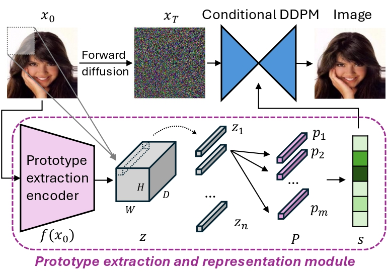

🪄Patronus: Interpretable Diffusion Models with Prototypes
Abstract
Uncovering the opacity of diffusion-based generative models is urgently needed, as their applications continue to expand while their underlying procedures largely remain a black box. With a critical question -- how can the diffusion generation process be interpreted and understood? -- we proposed Patronus, an interpretable diffusion model that incorporates a prototypical network to encode semantics in visual patches, revealingwhat visual patterns are learned and where and when they emerge throughout denoising. This interpretability of Patronus provides deeper insights into the generative mechanism, enabling the detection of shortcut learning via unwanted correlations and the tracing of semantic emergence across timesteps. We evaluate Patronus on four natural image datasets and one medical imaging dataset, demonstrating both faithful interpretability and strong generative performance. With this work, we open new avenues for understanding and steering diffusion models through prototype-based interpretability.
Proposed method: Patronus
Patronus: Prototype-Assisted Transparent Diffusion Model, incorporates a prototype extraction and representation module. This module learns patch-based prototypes within the image and computes similarity score for each prototype, which are then used to condition the diffusion process.
Proposed Prototype Visualization Method
Each learned prototype pj represents a semantic patch. Unlike ProtoPNet which retrieves prototypes by searching for closest training patches, we argue prototypes should align with the overall data distribution.
Our visualization method:
(1) Compute activation scores s for sample x0;
(2) Maximize target prototype score sJ while keeping others fixed;
(3) Generate new image x' conditioned on updated s';
(4) Extract the most activated patch as the prototype visualization.
This method generalizes to other prototypical deep learning models.
Assessing Semantic Meaning of Learned Prototypes

We verify that learned prototypes are semantically meaningful through three analyses:
(a) Reconstruction: Generating images from prototype activations accurately recreates semantic content.
(b) Extrapolation: Extending prototype activations beyond observed values produces coherent variations.
(c) Interpolation: Smoothly transitioning between two images' prototype activations yields meaningful intermediate samples.
Left: CheXpert (75-year-old female w/o enlarged heart → 27-year-old male w/ enlarged heart). Right: CelebA examples.
Prototype Visualization and Consistency
Unlike other autoencoder-based diffusion models, Patronus yields an interpretable semantic latent space where each prototype captures distinct semantic content. We visualize prototypes by amplifying their activation and extracting the most responsive patch.
(a) Prototype visualization: x0 denotes the original image, x̂0,s' denotes the generated image guided by enhanced prototype activation s'. Red square highlights the most activated patch, which serves as the visual representation of the chosen prototype (shown in third row). Note that prototype semantics are not pre-annotated but inferred through observation.
(b) Consistency: Visualization across random samples demonstrates that each prototype encodes consistent semantics.
Patronus as an Interpretable Tool
(a) Detecting shortcut learning: We introduced an unwanted correlation in CelebA: blonde/brown-haired images smile, while black-haired ones do not. Patronus captures this bias—increasing the black hair prototype shifts smile to non-smile and vice versa. This demonstrates how Patronus can discover unwanted model behavior such as shortcut learning.
(b) Tracing prototype emergence: Patronus reveals when each prototype emerges during generation by tracking similarity scores across timesteps. Low spatial frequency attributes (e.g., "wearing red") appear earlier, while high frequency attributes (e.g., "curly hair") emerge later. This insight can improve image editing efficiency and support bias mitigation once unwanted correlations are detected.
BibTeX
@article{weng2025patronus,
title={Patronus: Interpretable Diffusion Models with Prototypes},
author={Weng, Nina and Feragen, Aasa and Bigdeli, Siavash},
journal={arXiv preprint arXiv:2503.22782},
year={2025}
}